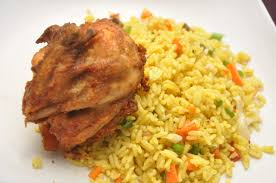

My best Food - Oyegbile Jemil
I love bread and beans as number one food but i will kill someone for fried rice and chicken
Ingredients of my meal
- Rice
- oil
- tomato
- onions
- cabbage
- carrot
- salt and pepper
- peas
- green beans
How to make my meal
Set your pot on heat and add 200mls of vegetable oil
Allow the oil to heat then add sliced onion,carrot and green beans
Add he curry powder and stir evenly
Then go ahead and add the pre-cooked rice. stir all together
Cover the pot and allow to simmer for 5 minutes


How to Make Fried rice and chicken